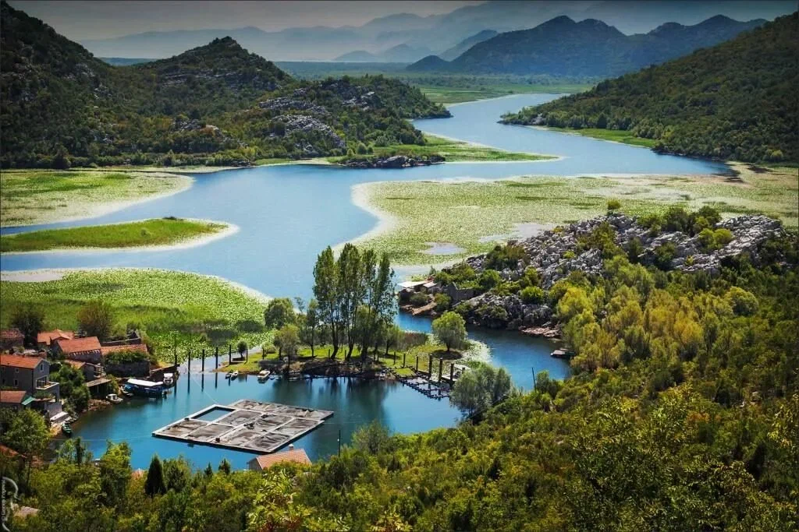

Скадарское озеро
Скадарское озеро — одно из самых живописных мест Черногории, идеально подходящее для любителей природы и активного отдыха. Это самое большое озеро на Балканах, славящееся своей богатой флорой и фауной. Здесь обитает более 280 видов птиц, включая редкие и исчезающие. Озеро окружено великолепными горами и живописными деревнями, где можно насладиться местной кухней и культурой. Посетители могут заняться пешими прогулками, Скадарское озеро — идеальное место для тех, кто хочет отдохнуть от городских суеты и насла.
